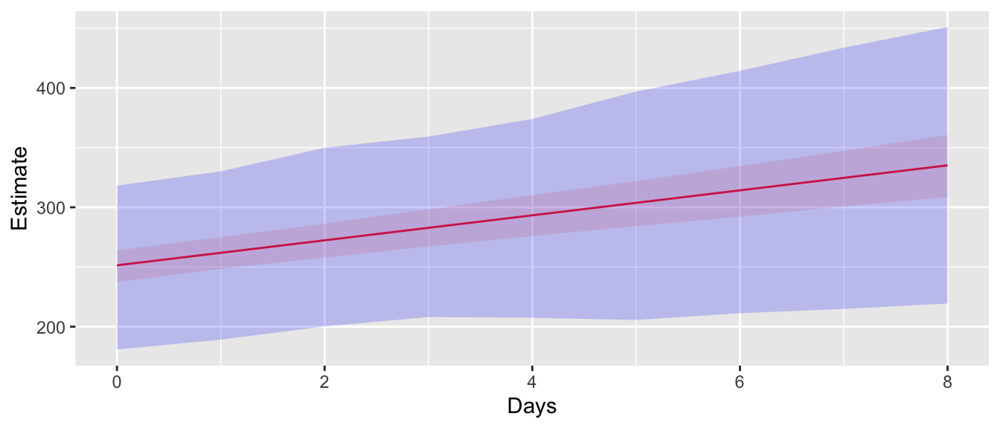
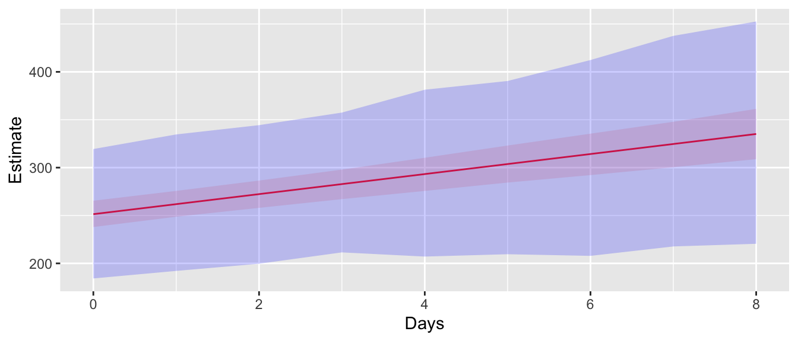
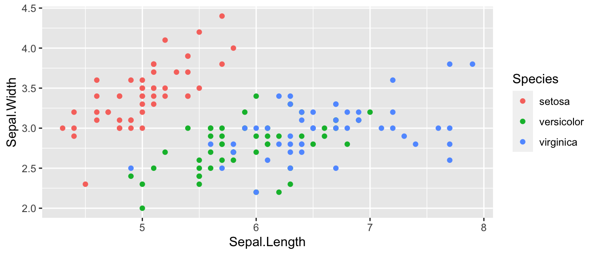
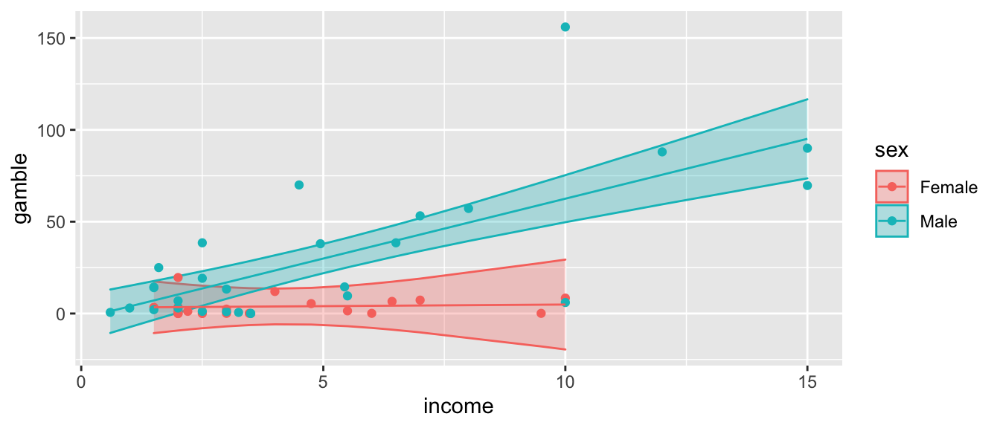

Chapter 5 Analysis of Covariance (ANCOVA)
library(tidyverse) # ggplot2, tidyr, dplyr
library(emmeans) 5.1 Introduction
One way that we could extend the ANOVA and regression models is to have both categorical and continuous predictor variables. For historical reasons going back to pre “computer in your pocket” days, statisticians call this the Analysis of Covariance (ANCOVA) model. Because it is just another example of a \(\boldsymbol{y} = \boldsymbol{X\beta} + \boldsymbol{\epsilon}\) linear model, I prefer to think of it as simply having both continuous and categorical variables in my model. None of the cookbook calculations change, but the interpretation of the parameters gets much more interesting.
The dataset teengamb in the package faraway has data regarding the rates of gambling among teenagers in Britain and their gender and socioeconomic status. One question we might be interested in is how gender and income relate to how much a person gambles. But what should be the effect of gender be?
There are two possible ways that gender could enter the model. Either:
We could fit two lines to the data one for males and one for females but require that the lines be parallel (i.e. having the same slopes for income). This is accomplished by having a separate y-intercept for each gender. In effect, the line for the females would be offset by a constant amount from the male line.
We could fit two lines but but allow the slopes to differ as well as the y-intercept. This is referred to as an “interaction” between income and gender. One way to remember that this is an interaction is because the effect of income on gambling rate is dependent on the gender of the individual.

*It should be noted here, that the constant variance assumption is being violated and we really ought to do a transformation. I would recommend performing a \(\sqrt{\cdot}\) transformation on both the gamble and income covariates, but we’ll leave them as is for now.
We will now see how to go about fitting these two models. As might be imagined, these can be fit in the same fashion we have been solving the linear models, but require a little finesse in defining the appropriate design matrix \(\boldsymbol{X}\).
5.2 Offset parallel Lines (aka additive models)
In order to get offset parallel lines, we want to write a model \[y_{i}=\begin{cases} \beta_{0}+\beta_{1}+\beta_{2}x_{i}+\epsilon_{i} & \;\;\;\textrm{if female}\\ \beta_{0}+\beta_{2}x_{i}+\epsilon_{i} & \;\;\;\textrm{if male} \end{cases}\] where \(\beta_{1}\) is the vertical offset of the female group regression line to the reference group, which is the males regression line. Because the first \(19\) observations are female, we can this in in matrix form as \[\left[\begin{array}{c} y_{1}\\ \vdots\\ y_{19}\\ y_{20}\\ \vdots\\ y_{47} \end{array}\right]=\left[\begin{array}{ccc} 1 & 1 & x_{1}\\ \vdots & \vdots & \vdots\\ 1 & 1 & x_{19}\\ 1 & 0 & x_{20}\\ \vdots & \vdots & \vdots\\ 1 & 0 & x_{47} \end{array}\right]\left[\begin{array}{c} \beta_{0}\\ \beta_{1}\\ \beta_{2} \end{array}\right]+\left[\begin{array}{c} \epsilon_{1}\\ \vdots\\ \epsilon_{19}\\ \epsilon_{20}\\ \vdots\\ \epsilon_{47} \end{array}\right]\]
I like this representation where \(\beta_{1}\) is the offset from the male regression line because it makes it very convenient to test if the offset is equal to zero. The second column of the design matrix referred to as a “dummy variable” or “indicator variable” that codes for the female gender. Notice that even though I have two genders, I only had to add one additional variable to my model because we already had a y-intercept \(\beta_{0}\) and we only added one indicator variable for females.
What if we had a third group? Then we would fit another column of indicator variable for the third group. The new beta coefficient in the model would be the offset of the new group to the reference group. For example we consider \(n=9\) observations with \(n_i=3\) observations per group where \(y_{i,j}\)is the \(j\) th replication of the \(i\)th group. \[\left[\begin{array}{c} y_{1,1}\\ y_{1,2}\\ y_{1,3}\\ y_{2,1}\\ y_{2,2}\\ y_{2,3}\\ y_{3,1}\\ y_{3,2}\\ y_{3,3} \end{array}\right]=\left[\begin{array}{cccc} 1 & 0 & 0 & x_{1,1}\\ 1 & 0 & 0 & x_{1,2}\\ 1 & 0 & 0 & x_{1,3}\\ 1 & 1 & 0 & x_{2,1}\\ 1 & 1 & 0 & x_{2,2}\\ 1 & 1 & 0 & x_{2,3}\\ 1 & 0 & 1 & x_{3,1}\\ 1 & 0 & 1 & x_{3,2}\\ 1 & 0 & 1 & x_{3,3} \end{array}\right]\left[\begin{array}{c} \beta_{0}\\ \beta_{1}\\ \beta_{2}\\ \beta_{3} \end{array}\right]+\left[\begin{array}{c} \epsilon_{1,1}\\ \epsilon_{1,2}\\ \epsilon_{1,3}\\ \epsilon_{2,1}\\ \epsilon_{2,2}\\ \epsilon_{2,3}\\ \epsilon_{3,3}\\ \epsilon_{3,2}\\ \epsilon_{3,3} \end{array}\right] \]
In this model, \(\beta_0\) is the y-intercept for group \(1\). The parameter \(\beta_1\) is the vertical offset from the reference group (group \(1\)) for the second group. Similarly \(\beta_2\) is the vertical offset for group \(3\). All groups will share the same slope, \(\beta_4\).
5.3 Lines with different slopes (aka Interaction model)
We can now include a discrete random variable and create regression lines that are parallel, but often that is inappropriate, such as in the teenage gambling dataset. We want to be able to fit a model that has different slopes. \[y_{i}=\begin{cases} \left(\beta_{0}+\beta_{1}\right)+\left(\beta_{2}+\beta_{3}\right)x_{i}+\epsilon_{i} & \;\;\;\textrm{if female}\\ \beta_{0}+\beta_{2}x_{i}+\epsilon_{i} & \;\;\;\textrm{if male} \end{cases} \] Where \(\beta_{1}\) is the offset in y-intercept of the female group from the male group, and \(\beta_{3}\) is the offset in slope. Now our matrix formula looks like
\[\left[\begin{array}{c} y_{1}\\ \vdots\\ y_{19}\\ y_{20}\\ \vdots\\ y_{47} \end{array}\right]=\left[\begin{array}{cccc} 1 & 1 & x_{1} & x_{1}\\ \vdots & \vdots & \vdots & \vdots\\ 1 & 1 & x_{19} & x_{19}\\ 1 & 0 & x_{20} & 0\\ \vdots & \vdots & \vdots & \vdots\\ 1 & 0 & x_{47} & 0 \end{array}\right]\left[\begin{array}{c} \beta_{0}\\ \beta_{1}\\ \beta_{2}\\ \beta_{3} \end{array}\right]+\left[\begin{array}{c} \epsilon_{1}\\ \vdots\\ \epsilon_{19}\\ \epsilon_{20}\\ \vdots\\ \epsilon_{47} \end{array}\right] \] where the new fourth column is the what I would get if I multiplied the \(\boldsymbol{x}\) column element-wise with the dummy-variable column. To fit this model in R we have
data('teengamb', package='faraway')
# Forces R to recognize that 0, 1 are categorical, also
# relabels the levels to something I understand.
teengamb <- teengamb %>% mutate( sex = ifelse( sex==1, 'Female', 'Male') )
# Fit a linear model with the interaction of sex and income
# Interactions can be specified useing a colon :
m1 <- lm( gamble ~ 1 + sex + income + sex:income, data=teengamb )
m1 <- lm( gamble ~ sex + income + sex:income, data=teengamb )
# R allows a shortcut for the prior definition
m1 <- lm( gamble ~ sex * income, data=teengamb )
# save the fit, lwr, upr values for each observation
# these are the yhat and CI
# If columns for fit, upr, lwr are already present, remove them
teengamb <- teengamb %>%
dplyr::select( -matches('fit'), -matches('lwr'), -matches('upr') ) %>%
cbind( predict(m1, interval='conf') )
# Make a nice plot that includes the regression line.
ggplot(teengamb, aes(x=income, col=sex, fill=sex)) +
geom_ribbon(aes(ymin=lwr, ymax=upr),
alpha=.3) + # how solid the layer is
geom_point(aes(y=gamble)) +
geom_line(aes(y=fit)) 
# print the model summary
summary(m1)##
## Call:
## lm(formula = gamble ~ sex * income, data = teengamb)
##
## Residuals:
## Min 1Q Median 3Q Max
## -56.522 -4.860 -1.790 6.273 93.478
##
## Coefficients:
## Estimate Std. Error t value Pr(>|t|)
## (Intercept) 3.1400 9.2492 0.339 0.73590
## sexMale -5.7996 11.2003 -0.518 0.60724
## income 0.1749 1.9034 0.092 0.92721
## sexMale:income 6.3432 2.1446 2.958 0.00502 **
## ---
## Signif. codes: 0 '***' 0.001 '**' 0.01 '*' 0.05 '.' 0.1 ' ' 1
##
## Residual standard error: 20.98 on 43 degrees of freedom
## Multiple R-squared: 0.5857, Adjusted R-squared: 0.5568
## F-statistic: 20.26 on 3 and 43 DF, p-value: 2.451e-08To interpret the terms, we have
| Coefficients | Interpretation |
|---|---|
(Intercept) |
y-intercept for the females |
sexMale |
The difference in y-intercept for Males |
income |
Slope of the female regression line |
sexMale:income |
The offset in slopes for the Males |
So looking at the summary, we see the interaction term sexMale:income is statistically significant indicating that we prefer the more complicated model with different slopes for each gender.
To calculate the differences between the predicted values at an income levels of 5 and 10, we could use multcomp::glht() and figure out the appropriate contrast vector, but we’ll use the easy version with emmeans()
emmeans(m1, specs = ~ income * sex,
at=list(income=c(5,10), sex=c('Male','Female')))## income sex emmean SE df lower.CL upper.CL
## 5 Male 29.93 3.97 43 21.93 37.9
## 10 Male 62.52 6.35 43 49.71 75.3
## 5 Female 4.01 5.08 43 -6.23 14.3
## 10 Female 4.89 12.13 43 -19.58 29.4
##
## Confidence level used: 0.95If we are interested in the differences we can just do a pairwise in the specs argument, but I also want to just calculate the differences at each income level.
# The pipe in the formula is essentially a group_by
emmeans(m1, specs = pairwise ~ sex | income,
at=list(income=c(5,10),
sex=c('Male','Female')))## $emmeans
## income = 5:
## sex emmean SE df lower.CL upper.CL
## Male 29.93 3.97 43 21.93 37.9
## Female 4.01 5.08 43 -6.23 14.3
##
## income = 10:
## sex emmean SE df lower.CL upper.CL
## Male 62.52 6.35 43 49.71 75.3
## Female 4.89 12.13 43 -19.58 29.4
##
## Confidence level used: 0.95
##
## $contrasts
## income = 5:
## contrast estimate SE df t.ratio p.value
## Male - Female 25.9 6.44 43 4.022 0.0002
##
## income = 10:
## contrast estimate SE df t.ratio p.value
## Male - Female 57.6 13.69 43 4.208 0.0001If we want the slopes as well as the difference in slopes, we would use the emtrends() function.
emtrends(m1, pairwise ~ income * sex, var = "income",
at=list(income=10, sex=c('Male','Female')))## $emtrends
## income sex income.trend SE df lower.CL upper.CL
## 10 Male 6.518 0.988 43 4.53 8.51
## 10 Female 0.175 1.903 43 -3.66 4.01
##
## Confidence level used: 0.95
##
## $contrasts
## contrast estimate SE df t.ratio p.value
## 10 Male - 10 Female 6.34 2.14 43 2.958 0.0050While I specified to calculate the slope at the x-value of income=10, that doesn’t matter because the slopes are the same at all x-values
Somewhat less interestingly, we could calculate the average of the Male and Female slopes.
# when specs doesn't include a variable that was used
# in the model, this will either
# a) average over the missing levels (categorical)
# b) use the average value of the variable (quantitative)
emtrends(m1, specs = ~ income, var = 'income',
at=list(income=10))## NOTE: Results may be misleading due to involvement in interactions## income income.trend SE df lower.CL upper.CL
## 10 3.35 1.07 43 1.18 5.51
##
## Results are averaged over the levels of: sex
## Confidence level used: 0.955.4 Iris Example
For a second example, we will explore the relationship between sepal length and sepal width for three species of irises. This data set is available in R as iris.
data(iris) # read in the iris dataset
levels(iris$Species) # notice the order of levels of Species## [1] "setosa" "versicolor" "virginica"The very first thing we should do when encountering a dataset is to do some sort of graphical summary to get an idea of what model seems appropriate.
ggplot(iris, aes(x=Sepal.Length, y=Sepal.Width, color=Species)) +
geom_point()
Looking at this graph, it seems that I will likely have a model with different y-intercepts for each species, but it isn’t clear to me if we need different slopes.
We consider the sequence of building successively more complex models:
# make virginica the reference group
iris <- iris %>%
mutate( Species = forcats::fct_relevel(Species, 'virginica') )
m1 <- lm( Sepal.Width ~ Sepal.Length, data=iris ) # One line
m2 <- lm( Sepal.Width ~ Sepal.Length + Species, data=iris ) # Parallel Lines
m3 <- lm( Sepal.Width ~ Sepal.Length * Species, data=iris ) # Non-parallel LinesThe three models we consider are the following:

Looking at these, it seems obvious that the simplest model where we ignore Species is horrible. The other two models seem decent, and I am not sure about the parallel lines model vs the differing slopes model.
m1 %>% broom::tidy() %>% mutate_if( is.numeric, round, digits=3 )## # A tibble: 2 x 5
## term estimate std.error statistic p.value
## <chr> <dbl> <dbl> <dbl> <dbl>
## 1 (Intercept) 3.42 0.254 13.5 0
## 2 Sepal.Length -0.062 0.043 -1.44 0.152For the simplest model, there is so much unexplained noise that the slope variable isn’t significant.
Moving onto the next most complicated model, where each species has their own y-intercept, but they share a slope, we have
m2 %>% broom::tidy() %>% mutate_if( is.numeric, round, digits=3 )## # A tibble: 4 x 5
## term estimate std.error statistic p.value
## <chr> <dbl> <dbl> <dbl> <dbl>
## 1 (Intercept) 0.669 0.308 2.17 0.031
## 2 Sepal.Length 0.35 0.046 7.56 0
## 3 Speciessetosa 1.01 0.093 10.8 0
## 4 Speciesversicolor 0.024 0.065 0.37 0.712The first two lines are the y-intercept and slope associated with the reference group and the last two lines are the y-intercept offsets from the reference group to Setosa and Versicolor, respectively. We have that the slope associated with increasing Sepal Length is significant and that Setosa has a statistically different y-intercept than the reference group Virginica and that Versicolor does not have a statistically different y-intercept than the reference group.
Finally we consider the most complicated model that includes two more slope parameters
m3 %>% broom::tidy() %>% mutate_if( is.numeric, round, digits=3 )## # A tibble: 6 x 5
## term estimate std.error statistic p.value
## <chr> <dbl> <dbl> <dbl> <dbl>
## 1 (Intercept) 1.45 0.405 3.57 0
## 2 Sepal.Length 0.232 0.061 3.79 0
## 3 Speciessetosa -2.02 0.686 -2.94 0.004
## 4 Speciesversicolor -0.574 0.605 -0.95 0.344
## 5 Sepal.Length:Speciessetosa 0.567 0.126 4.49 0
## 6 Sepal.Length:Speciesversicolor 0.088 0.097 0.905 0.367These parameters are:
| Meaning | R-label |
|---|---|
| Reference group y-intercept | (Intercept) |
| Reference group slope | Sepal.Length |
| offset to y-intercept for Setosa | Speciessetosa |
| offset to y-intercept for Versicolor | Speciesversicolor |
| offset to slope for Setosa | Sepal.Length:Speciessetosa |
| offset to slope for Versicolor | Sepal.Length:Speciesversicolor |
It appears that slope for Setosa is different from the reference group Virginica. However because we’ve added \(2\) parameters to the model, testing Model2 vs Model3 is not equivalent to just looking at the p-value for that one slope. Instead we need to look at the F-test comparing the two models which will evaluate if the decrease in SSE is sufficient to justify the addition of two parameters.
anova(m2, m3)## Analysis of Variance Table
##
## Model 1: Sepal.Width ~ Sepal.Length + Species
## Model 2: Sepal.Width ~ Sepal.Length * Species
## Res.Df RSS Df Sum of Sq F Pr(>F)
## 1 146 12.193
## 2 144 10.680 2 1.5132 10.201 7.19e-05 ***
## ---
## Signif. codes: 0 '***' 0.001 '**' 0.01 '*' 0.05 '.' 0.1 ' ' 1The F-test concludes that there is sufficient decrease in the SSE to justify adding two additional parameters to the model.
5.5 Exercises
- The in the
farawaypackage, there is a dataset namedphbirthsthat gives babies birth weights along with their gestational time in utero along with the mother’s smoking status.Load and inspect the dataset using
data('phbirths', package='faraway') # load the data within the package ?faraway::phbirths # Look at the help fileCreate a plot of the birth weight vs the gestational age. Color code the points based on the mother’s smoking status. Does it appear that smoking matters?
Fit the simple model (one regression line) along with both the main effects (parallel lines) and interaction (non-parallel lines) ANCOVA model to these data. Which model is preferred?
Using whichever model you selected in the previous section, create a graph of the data along with the confidence region for the regression line(s).
Now consider only the “full term babies” which are babies with gestational age at birth \(\ge 36\) weeks. With this reduced dataset, repeat parts c,d.
Interpret the relationship between gestational length and mother’s smoking status on birth weight.
- The in the
farawaypackage, there is a dataset namedclotthat gives information about the time for blood to clot verses the blood dilution concentration when the blood was diluted with prothrombin-free plasma. Unfortunately the researchers had to order the plasma in two different lots (could think of this as two different sources) and need to ascertain if the lot number makes any difference in clotting time.- Log transform the
timeandconcvariable and plot the log-transformed data with color of the data point indicating the lot number. (We will discuss why we performed this transformation later in the course.) - Ignoring the slight remaining curvature in the data, perform the appropriate analysis using transformed variables. Does
lotmatter?
- Log transform the
- In base R, there is a data set
ToothGrowthwhich is data from an experiment giving Vitamin C to guinea pigs. The guinea pigs were given vitamin C doses either via orange juice or an ascorbic acid tablet. The response of interest was a measure of tooth growth where a higher growth is better.- Log transform the
doseand use that throughout this problem. Use \(e\) as the base, which R does by default when you use thelog()function. (We will discuss why we performed this transformation later in the course.) - Graph the data, fit appropriate ANCOVA models, and describe the relationship between the delivery method, log(dose) level, and tooth growth. Produce a graph with the data and the regression line(s) along with the confidence region for the line(s).
- Is there a statistically significant difference in slopes between the two delivery methods?
- Just using your graphs and visual inspection, at low dose levels, say \(\log(dose)=-0.7\), is there a difference in delivery method? What about at high dose levels, say \(\log(dose)=0.7\)?
- Use
emmeans()to test if there is a statistically significant difference at low dose levels \(\log(dose)=-0.7\). Furthermore, test if there is a statistically significant difference at high dose levels. Summarize your findings.
- Log transform the